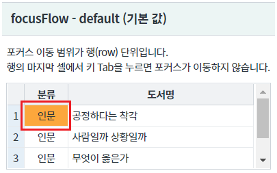
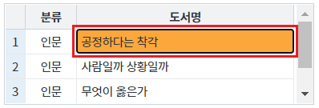
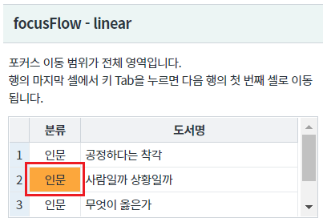
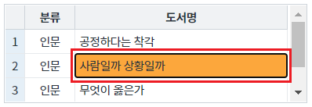
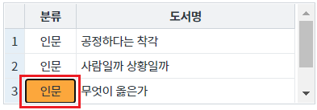
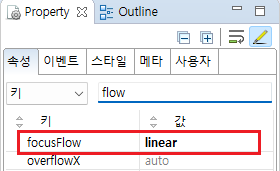
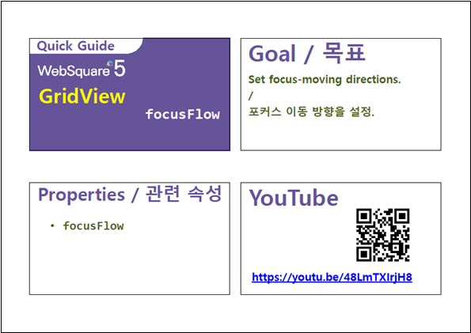

[GridView] 키보드를 이용해 포커스 이동 시 이동 범위 설정하기
1개요
GridView의 속성 focusFlow의 설정 값 비교 예제입니다. 속성은 focusFlow는 키 입력을 통해 셀의 포커스를 이동할 때, 포커스의 이동 범위를 지정할 수 있습니다. 다음 셀로 포커스를 이동하는 기본 키는 [Tab]이며 이전 셀로 포커스 이동은 키 [Shift+Tab]로 설정되어 있습니다.
설정 값에 따른 동작 방식은 아래와 같습니다. - default : 행(row)에서만 포커스가 이동됩니다. - linear : 행의 마지막 셀에서 키 Tab을 누르면 다음 행의 첫 번째 셀로 이동됩니다.
2구현된 기능
focusFlow - default (기본 값)
focusFlow - linear
3예제 테스트 방법
3.1focusFlow - default (기본 값)
포커스 이동 범위가 행(row) 단위입니다. 행의 마지막 셀에서 키 Tab을 누르면 포커스가 이동하지 않습니다.
- STEP1. 영역 [focusFlow - default (기본 값)]의 GridView의 컬럼 [분류]의 셀을 선택합니다.
[브라우저(Chrome) 실행 예시]

- STEP2. 셀을 선택 한 뒤 키보드 키 [Tab]을 누릅니다.
GridView의 셀 포커스가 컬럼 [도서명]의 셀로 이동됩니다.
[브라우저(Chrome) 실행 예시]

- STEP3. 컬럼 [도서명] 셀에서 키보드 키 [Tab]을 누릅니다.
GridView의 셀 포커스가 동일 셀에 유지됩니다.
[브라우저(Chrome) 실행 예시]

3.2focusFlow - linear
포커스 이동 범위가 전체 영역입니다. 행의 마지막 셀에서 키 Tab을 누르면 다음 행의 첫 번째 셀로 이동됩니다.
- STEP1. 영역 [focusFlow - linear]의 GridView의 컬럼 [분류]의 셀을 선택합니다.
[브라우저(Chrome) 실행 예시]

- STEP2. 셀을 선택 한 뒤 키보드 키 [Tab]을 누릅니다.
GridView의 셀 포커스가 컬럼 [도서명]의 셀로 이동됩니다.
[브라우저(Chrome) 실행 예시]

- STEP3. 컬럼 [도서명] 셀에서 키보드 키 [Tab]을 누릅니다.
GridView의 셀 포커스가 다음 행의 컬럼 [분류]의 셀로 이동됩니다.
[브라우저(Chrome) 실행 예시]

4구현 예시
4.1속성 focusFlow 설정
STEP1. GridView의 속성을 정의합니다.
[필수] focusFlow="옵션 값" //[default: default, linear] 포커스 이동 방향 설정
(옵션 값 설명)
default : 행(row)에서만 포커스가 이동됩니다.
예시) focusFlow="default"
linear : 행의 마지막 셀에서 키 Tab을 누르면 다음 행의 첫 번째 셀로 이동됩니다.
예시) focusFlow="linear"
그림 1.웹스퀘어5 SP5 스튜디오의 Property View(속성창) 예시

[소스 코드 예시]
<!-- gridView 의 소스 본문 예시 --> <w2:gridView focusFlow="linear" dataList="data:dlt_books" style="height: 100px;"> <!-- 중략 --> </w2:gridView>
5주요 API
focusFlow
6참고 문서
[웹스퀘어5 SP5 개발 가이드] GridView
링크 : https://docs1.inswave.com/sp5_user_guide/bc10c1b82c9a2a0b#e1c4658baf7e726f
[웹스퀘어5 SP5 개발 가이드] GridView 포커스 이동 방식 (focusFlow)
링크 : https://docs1.inswave.com/sp5_user_guide/86bdcf48029b958b#e259a913052c1bd3
7참고 동영상
GridView 포커스 이동 방식 (focusFlow)
링크 : https://youtu.be/48LmTXIrjH8
